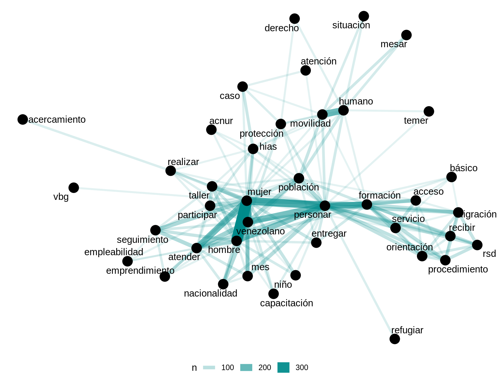
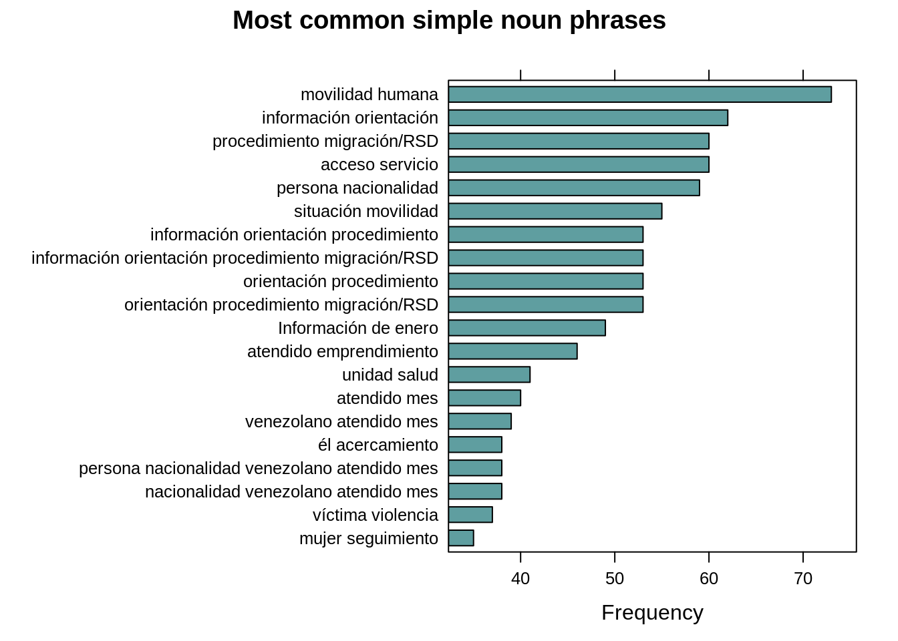

Part of speech tagging
We use the UDpipe library with the corresponding udpipe R package for PoS (part-of-speech tagging) and dependency parsing. UDpipe library is using Universal Dependencies5.
Universal Dependencies (UD) is a framework for consistent annotation of grammar (parts of speech, morphological features, and syntactic dependencies) across different human languages.
UDpipe package also offers tokenization and lemmatization; however, they are not the essential processes for this part because they are done in previous pages (see the section).
We install the corpus called Spanish-AnCora6.
UDpipe returns an output in a format called CoNLL-U7.
Here is a glance of the data below to show how it looks like behind the scenes:
| doc_id | paragraph_id | sentence_id | sentence | token_id | token | lemma | upos | xpos | feats | head_token_id | dep_rel | deps | misc |
|---|---|---|---|---|---|---|---|---|---|---|---|---|---|
| doc1 | 1 | 1 | Se complem... | 1 | Se | él | PRON | PRON | Case=Acc,Dat|Person=3|PrepCase=Npr|PronType=Prs|Reflex=Yes | 2 | obj | NA | NA |
| doc1 | 1 | 1 | Se complem... | 2 | complementa | complementar | VERB | VERB | Mood=Ind|Number=Sing|Person=3|Tense=Pres|VerbForm=Fin | 0 | root | NA | NA |
| doc1 | 1 | 1 | Se complem... | 4 | entrega | entrega | NOUN | NOUN | Gender=Fem|Number=Sing | 2 | nsubj | NA | NA |
| doc1 | 1 | 1 | Se complem... | 5 | realizada | realizado | ADJ | ADJ | Gender=Fem|Number=Sing|VerbForm=Part | 4 | amod | NA | NA |
| doc1 | 1 | 1 | Se complem... | 7 | meses | mes | NOUN | NOUN | Gender=Masc|Number=Plur | 5 | obl | NA | NA |
| ... | ... | ... | ... | ... | ... | ... | ... | ... | ... | ... | ... | ... | ... |
Annotating text with UD is a computationally expensive operation. The output
format is quite extensive and detailed, but we do not use all the features
existing in the output. Mainly, the upos column is critical for this part of
the analysis.
Here is the description of the columns to be used below. Please go to the specified links in the table for more detailed answers.
| Column name | Description |
|---|---|
token |
word which can be analyzed as a single item |
lemma |
non-inflected8 form of word |
upos |
universal part-of-speech tag. see here |
Unique part-of-speech tags in the responses (see here for details):
| V1 | V2 | V3 | V4 | V5 | V6 | V7 | V8 | V9 | V10 | V11 | V12 | V13 | V14 | V15 | V16 |
|---|---|---|---|---|---|---|---|---|---|---|---|---|---|---|---|
| PRON | VERB | NOUN | ADJ | NUM | PROPN | PUNCT | ADP | NA | AUX | DET | SCONJ | ADV | SYM | CCONJ | INTJ |
Most common words by word classes
The term Word classes here refers nouns, verbs, adjectives, and adverbs.
All the plots generated below use free scale on the x-axis.

Automated Keywords Extraction
RAKE, short for Rapid Automatic Keyword Extraction, is a popular unsupervised method to extract keywords in texts. We will use it to find the word frequencies with respect to the occurence of words with other words in the text.

Alternatively, if we look at the words related with Venezuela whose RAKE scores are calculated:
| keyword | ngram | freq | rake | key |
|---|---|---|---|---|
| población venezolano | 2 | 5 | 7.1437249 | población venezolano |
| nacionalidad venezolano | 2 | 10 | 6.6184932 | nacionalidad venezolano |
| venta ambulante | 2 | 5 | 6.2500000 | venta ambulante |
| ciudadano venezolano | 2 | 4 | 6.1386019 | ciudadano venezolano |
| familia venezolano | 2 | 3 | 6.0695230 | familia venezolano |
| colombiano venezolano | 2 | 4 | 5.3315367 | colombiano venezolano |
| mujer venezolano | 2 | 22 | 5.2319461 | mujer venezolano |
| persona venezolano | 2 | 12 | 5.2125305 | persona venezolano |
| emprendedor venezolano | 2 | 2 | 5.1455464 | emprendedor venezolano |
| emprendedora venezolano | 2 | 4 | 4.8886019 | emprendedora venezolano |
| prevención persona | 2 | 3 | 4.7971429 | prevención persona |
| hombre venezolano | 2 | 2 | 4.6968526 | hombre venezolano |
| higiene prevención | 2 | 8 | 4.2857143 | higiene prevención |
| minoría venezolano | 2 | 4 | 4.2011019 | minoría venezolano |
| Capacitación prevención | 2 | 4 | 3.7857143 | Capacitación prevención |
| venezolano | 1 | 6 | 3.2011019 | venezolano |
| evento socio | 2 | 2 | 3.1354724 | evento socio |
| evento deportivo | 2 | 3 | 2.6060606 | evento deportivo |
| ventana ventilación | 2 | 3 | 2.0000000 | ventana ventilación |
| intervención | 1 | 11 | 1.9166667 | intervención |
| evento | 1 | 11 | 1.6060606 | evento |
| venezolana entrevistado | 2 | 4 | 1.2666667 | venezolana entrevistado |
| venezolana | 1 | 11 | 0.2666667 | venezolana |
Top phrases formed by noun and verb in the responses

Universal Dependencies also provides a visualization tool for the CoNLL-U format, see CoNLL-U file viewer.
For example, an example sentence from the response taken from the Protección_VBG is visualized via the file viewer tool as below.
Sentence
UNFPA ha implementado un espacio seguro para la atención de mujeres en movilidad humana y gestión de casos en Sucumbíos-Puente San Miguel.
Visualization
Figure 15: A dependency tree visualization from a response in Protección_VBG. Created with CoNNL-U file viewer.
Universal Dependencies https://universaldependencies.org/↩
Described at http://universaldependencies.org/format.html Accessed 5 September, 2019.↩
“In morphology, inflection (or inflexion) is a process of word formation, in which a word is modified to express different grammatical categories such as tense, case, voice, aspect, person, number, gender, mood, animacy, and definiteness.” https://en.wikipedia.org/wiki/Inflection" Accessed 9 September, 2019.↩